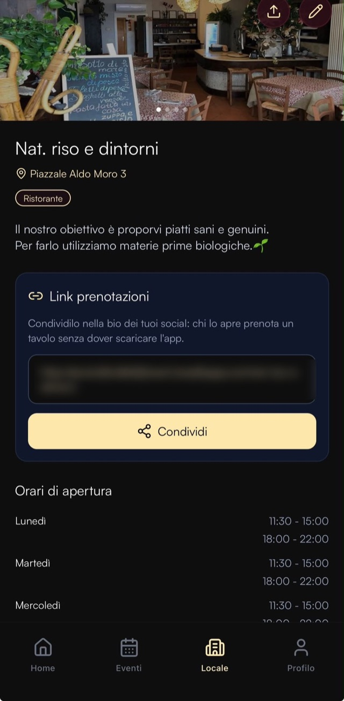
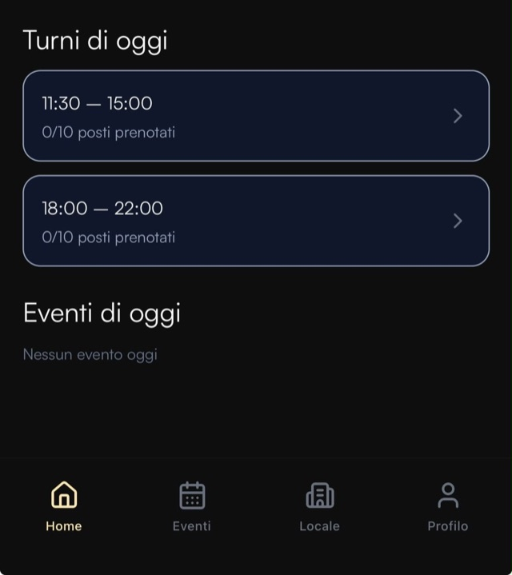
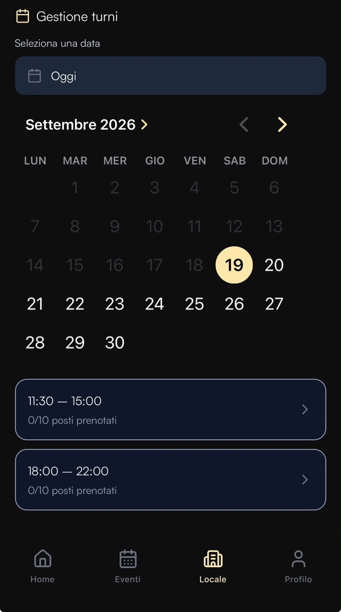
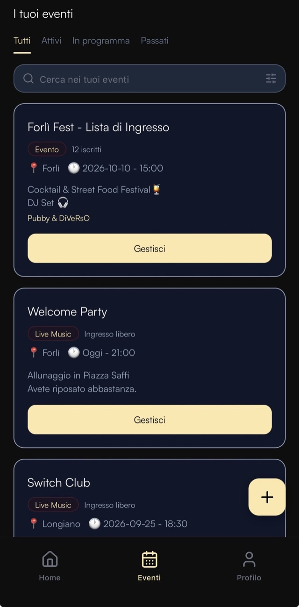
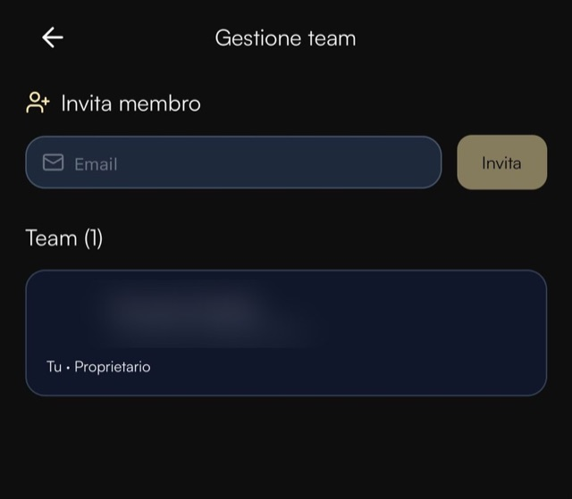

Per i locali e i ristoranti
Le prenotazioni arrivano da sole.
Apri l'app e vedi quante persone aspetti stasera. Nessuno ti chiama durante il servizio e non ci sono messaggi da recuperare a fine turno.
Il problema
Le prenotazioni le prendi
nei momenti sbagliati.
Il telefono squilla proprio mentre stai servendo ai tavoli.
Leggi i messaggi a mezzanotte, quando quel tavolo è ormai andato altrove.
E l'agenda resta un foglio pieno di nomi cancellati.
Il pezzo forte
Un link nella bio.
Basta quello.
Ogni locale su Pubby ha un proprio indirizzo pubblico. Chi lo apre può prenotare un tavolo senza scaricare l'app: mettilo nella bio di Instagram, in fondo al menù digitale o nella risposta automatica ai messaggi.
È la strada più breve per trasformare chi ti segue in coperti.

La giornata
Quante persone aspetti stasera.
La home risponde a una domanda sola. Mostra i turni del giorno con i posti già prenotati sul totale disponibile e, toccando il turno, i nomi di chi arriva.
Per sabato prossimo o per il ponte c'è il calendario: scegli il giorno e vedi subito la situazione.
Gli orari generano i turni
Imposti gli orari di apertura giorno per giorno e da lì nascono le fasce prenotabili. Un giorno lasciato vuoto è un giorno di chiusura.


Le serate
Sai quanti sono prima che arrivino.
Pubblichi la serata e la vedono le persone della zona. Accanto a ogni evento trovi il numero di iscritti: è la stima più attendibile per decidere personale, scorte e allestimento.
Concerti, dj set, partite, brunch della domenica: le serate che si ripetono vengono ripubblicate in automatico.

Il team
In sala sanno chi arriva.
Inviti chi lavora con te inserendo la sua email: riceve l'accesso sul proprio account e inizia a vedere le prenotazioni del locale.
Nessuna password da passare di mano. Se qualcuno cambia mansione o lascia il locale, lo rimuovi senza toccare gli accessi degli altri.

Come si parte
Tre passaggi e sei dentro.
Ci scrivi
Una mail o un messaggio: ci racconti che tipo di locale hai e di che cosa hai bisogno.
Prepariamo la scheda
Foto, descrizione, categoria e orari di apertura: da questi nascono i turni prenotabili.
Ricevi l'invito
Ti arriva una mail, imposti la password ed entri. Da quel momento le prenotazioni arrivano a te.
Parliamone
Dicci che locale hai.
Ti risponde una persona, non un modulo. Se preferisci, scrivici direttamente su Instagram.
Dall'altra parte
Qualcuno stasera
sta cercando te.
Guarda com'è fatto Pubby per chi esce la sera.